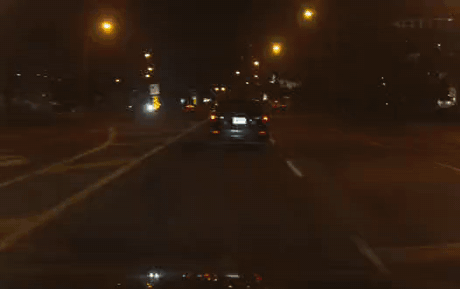
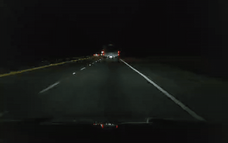
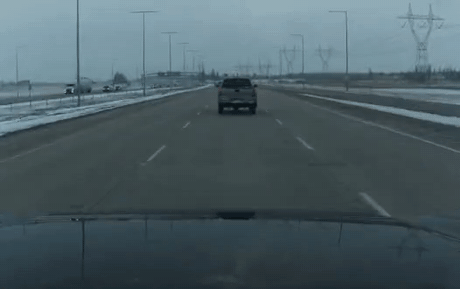
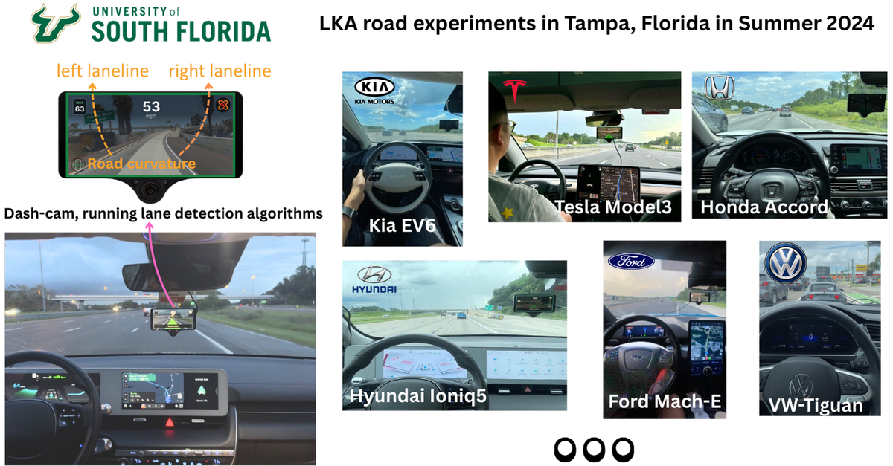
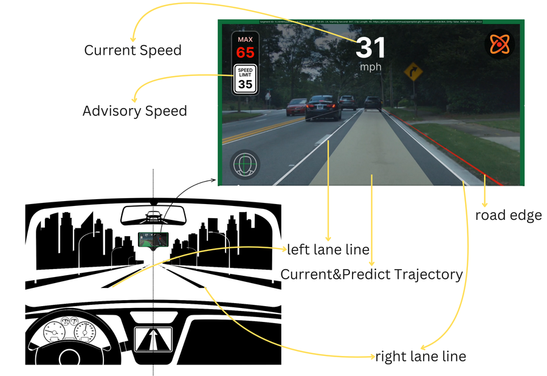
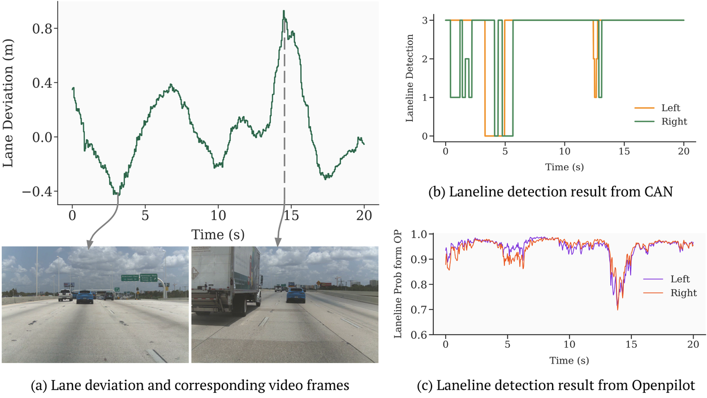
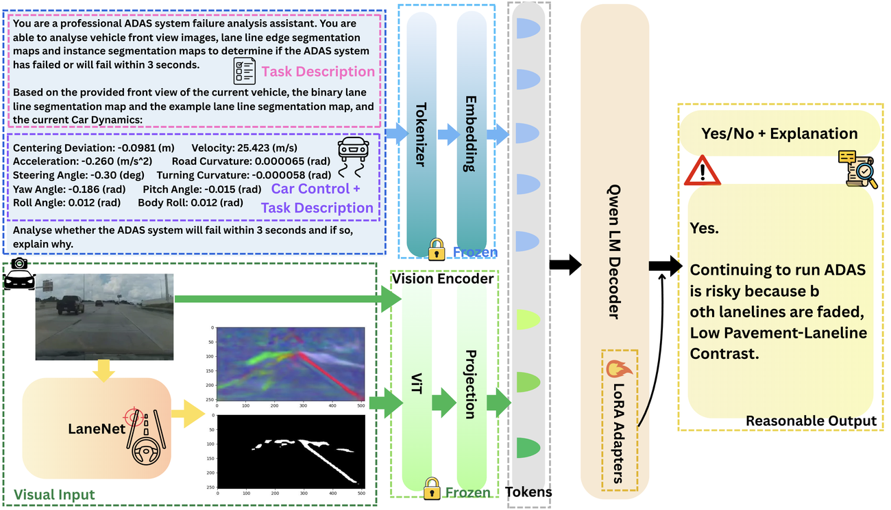
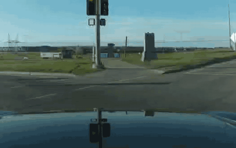

OpenLKA: An Open Dataset of Lane Keeping Assist from Production Vehicles Under Real-World Driving Conditions



OpenLKA is the first large-scale, open, real-world dataset focused on Lane Keeping Assist (LKA) performance, pairing decoded CAN-bus logs with synchronized front-camera video.
Abstract
OpenLKA is the first open, large-scale dataset for evaluating Lane Keeping Assist (LKA). It comprises roughly 389 hours of LKA-steered driving from 62 production vehicle models, collected through systematic road testing in Tampa, Florida and augmented with open-source community contributions. Each drive pairs reverse-engineered CAN-bus logs — which expose otherwise-hidden LKA operating signals — with synchronized 1080p / 20 fps front-camera video and scenario annotations spanning degraded lane markings, complex road geometries, adverse weather, and varied traffic. Our analysis reveals common LKA failure modes across perception, planning, and control, with marked performance degradation near merges and diverges and under poor lane markings. The dataset is released under the MIT License to support reproducible research on real-world driver-assistance safety.

A fleet of 62 production vehicle models spanning many makes and model years.

Data collection with a comma device to decode CAN-bus LKA signals alongside video.

Perception analysis of lane detection quality across scenarios.

LKAlert: an end-to-end pipeline predicting real-world lane-keeping safety.
LKA Failure Scenarios
Real captured moments where production LKA degrades or disengages.

BibTeX
@inproceedings{wang2025openlka,
title = {OpenLKA: An Open Dataset of Lane Keeping Assist from Production Vehicles Under Real-World Driving Conditions},
author = {Wang, Yuhang and Alhuraish, Abdulaziz and Yuan, Shengming and Wang, Shuyi and Zhou, Hao},
booktitle = {IEEE International Conference on Intelligent Transportation Systems (ITSC)},
year = {2025}
}